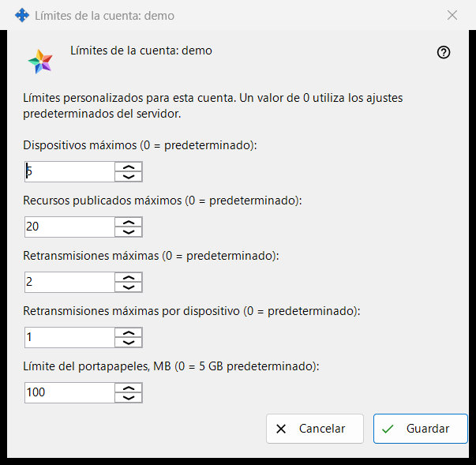
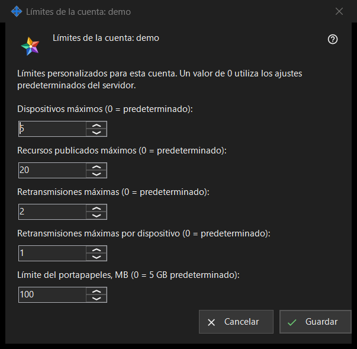

Límites de la cuenta
Para qué sirve
Fija límites individuales para una cuenta del Media Exchange Server que administras; un valor dejado en 0 sigue el valor predeterminado del servidor. Se abre desde el botón «Límites..» bajo la lista de cuentas de la página Media Exchange Server de los ajustes de Share Manager, que aparece cuando hay una cuenta seleccionada. El título nombra la cuenta: «Límites de la cuenta: <login>».


En este orden
- Selecciona la cuenta y pulsa «Límites..».
- Escribe un número para cada límite que quieras cambiar y deja 0 para el valor predeterminado del servidor.
- Pulsa «Guardar».
- Lee la línea de resultado: «Límites de la cuenta <login> guardados.»
Los elementos
Dispositivos y recursos
«Dispositivos máximos (0 = predeterminado):» limita los dispositivos que pueden iniciar sesión en la cuenta. «Recursos publicados máximos (0 = predeterminado):» limita las carpetas compartidas y otros recursos que la cuenta puede publicar en el servidor.
Retransmisiones
«Retransmisiones máximas (0 = predeterminado):» limita las retransmisiones de toda la cuenta, y «Retransmisiones máximas por dispositivo (0 = predeterminado):» limita las que puede iniciar un solo dispositivo.
Límite del portapapeles
«Límite del portapapeles, MB (0 = 5 GB predeterminado):» fija el mayor valor que la cuenta puede enviar a su portapapeles en el servidor, en megabytes enteros. Un límite guardado en unidades más pequeñas, por ejemplo 512 KB, se muestra como 0 y conserva su tamaño exacto mientras no toques este campo.
Guardar y cancelar
«Guardar» sustituye en bloque los límites propios de la cuenta: cada número mayor que 0 pasa a ser un límite, cada 0 significa el valor predeterminado del servidor y cinco ceros eliminan las excepciones de la cuenta. «Cancelar» no cambia nada. Si el servidor rechaza un valor, la línea de resultado da el motivo, por ejemplo «Límite no permitido: debe ser un número entero dentro del rango aceptado por el servidor.»
Ajustes del gestor · Ajustes de uso compartido SFTP · Ajustes del servidor de intercambio